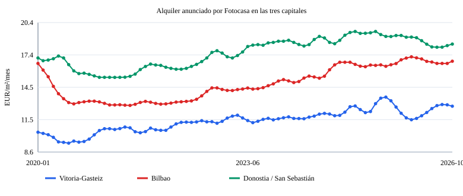
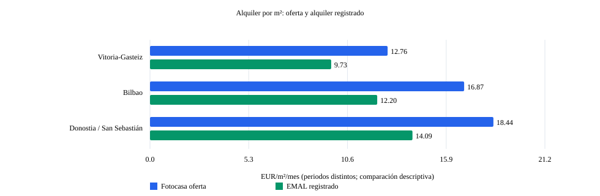
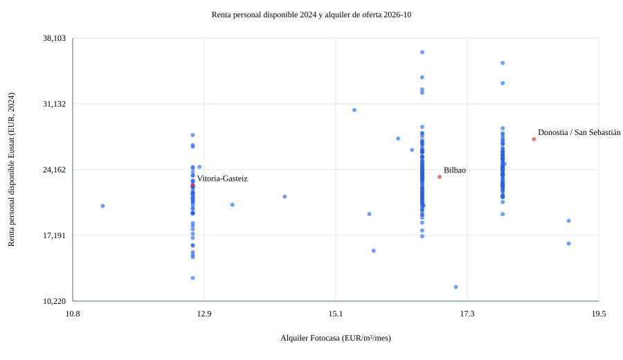
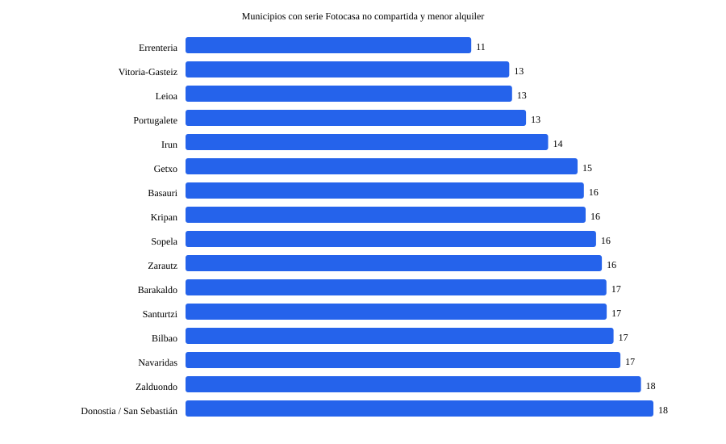
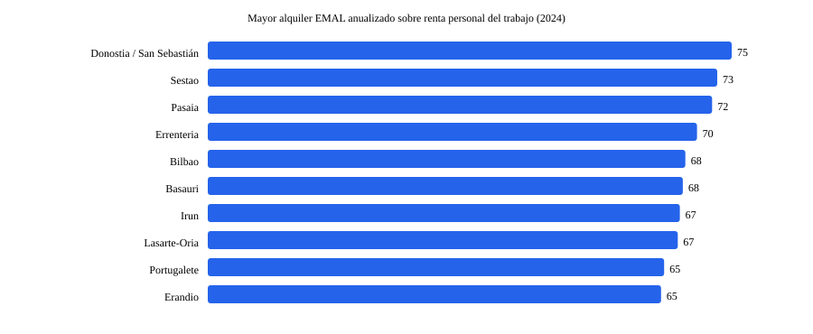

Fase 6. Análisis generado desde MongoDB reto_vivienda_fase3 y referencias salariales de C.A. de Euskadi desde reto_vivienda, el 2026-11-12T17:56+01:00.
| Indicador | Periodo | Municipios con dato | Catálogo |
|---|---|---|---|
| Fotocasa alquiler | 2026-10 | 251 | 252 |
| Fotocasa compraventa | 2026-10 | 251 | 252 |
| EMAL alquiler vigente | 2026-03-31 | 72 | 252 |
| Pisos.com anuncios alquiler | 2026-11-06 | 29 | 252 |
| Eustat renta personal disponible | 2024 | 252 | 252 |
| Eustat renta personal media del trabajo (sin edad) | 2024 | 252 | 252 |
| Variación Fotocasa alquiler | 2026-10 frente al inicio de serie | 251 | 252 |
| Diferencia Fotocasa-EMAL | 2026-10 frente a 2026-03-31 | 72 | 252 |
| Esfuerzo orientativo con remuneración regional | 2024 | 251 | 252 |
| Alquiler EMAL anualizado / renta Eustat del trabajo | 2024 | 71 | 252 |
| Municipio | Fotocasa alquiler (2026-10) EUR/m²/mes | Fotocasa venta (2026-10) EUR/m² | EMAL (2026-03-31) EUR/m²/mes | Pisos.com alquiler (2026-11-06) EUR/m²/mes | Eustat renta personal disponible (2024) EUR | Fotocasa−EMAL EUR/m²/mes (descriptivo) |
|---|---|---|---|---|---|---|
| Vitoria-Gasteiz | 12,76 | 3.103,26 | 9,728 | 17,60 (n=1) | 22.514 | 3,032 |
| Bilbao | 16,87 | 3.980,10 | 12,202 | 19,33 (n=85) | 23.391 | 4,668 |
| Donostia / San Sebastián | 18,44 | 6.488,43 | 14,094 | 22,22 (n=12) | 27.389 | 4,346 |
La remuneración neta media regional de 16-29 años en 2024 fue 1.612 EUR/mes para hombres y 1.545 EUR/mes para mujeres. La tabla compara esos valores con el alquiler Fotocasa medio de cada municipio para 60 m².
| Municipio | Alquiler Fotocasa 2024 EUR/m²/mes | Alquiler estimado 60 m² EUR/mes | Esfuerzo vs referencia hombres % | Esfuerzo vs referencia mujeres % |
|---|---|---|---|---|
| Vitoria-Gasteiz | 11,83 | 709,75 | 44,03 | 45,94 |
| Bilbao | 15,56 | 933,45 | 57,91 | 60,42 |
| Donostia / San Sebastián | 18,66 | 1.119,85 | 69,47 | 72,48 |
Como contraste separado, IOVJ registra 1.381 para el grupo 18-29 en 2024. No se mezcla con remuMedia, que utiliza 16-29 años y desglosa por sexo.
Se cruzan por código municipal los contratos EMAL iniciados en 2024 con la renta personal media anual Eustat de la categoría «Renta del trabajo». El cociente anualiza la renta mensual media EMAL por 12 y la divide por la renta personal del trabajo. Incluye todos los grupos de edad disponibles en Eustat: no es un salario juvenil ni una medida neta. El cruce solo incluye los 71 municipios con datos válidos en ambas fuentes. La hoja EMAL de origen cubre municipios de más de 5.000 habitantes.
| Municipio | Código | Eustat renta trabajo EUR/año | EMAL renta mensual EUR | Fianzas EMAL | Alquiler anualizado / renta trabajo % |
|---|---|---|---|---|---|
| Lazkao | 20049 | 19.709 | 634,27 | 49 | 38,62 |
| Oñati | 20059 | 18.776 | 615,89 | 74 | 39,36 |
| Markina-Xemein | 48060 | 16.280 | 564,67 | 43 | 41,62 |
| Vitoria-Gasteiz | 01059 | 15.945 | 781,98 | 2280 | 58,85 |
| Bilbao | 48020 | 16.040 | 910,66 | 3275 | 68,13 |
| Pasaia | 20064 | 13.538 | 811,56 | 187 | 71,94 |
| Sestao | 48084 | 11.693 | 708,21 | 207 | 72,68 |
| Donostia / San Sebastián | 20069 | 18.009 | 1.121,71 | 2092 | 74,74 |
Entre las tres capitales, Vitoria-Gasteiz presenta el menor precio de oferta de alquiler Fotocasa (12,76 EUR/m²/mes, 2026-10); Donostia / San Sebastián presenta el mayor (18,44 EUR/m²/mes). La mayor renta personal disponible Eustat corresponde a Donostia / San Sebastián (27.389 EUR en 2024), pero esto no permite concluir que las personas jóvenes puedan emanciparse allí. Entre las capitales, con la referencia regional de ingresos, el menor esfuerzo estimado es Vitoria-Gasteiz (45,94% para la referencia femenina) y el mayor es Donostia / San Sebastián (72,48%). Es una comparación orientativa de precios de Fotocasa con ingresos regionales, no una tasa observada de esfuerzo de cada municipio. En el cruce municipal EMAL-Eustat de 71 municipios, el alquiler medio anualizado más bajo frente a la renta personal del trabajo corresponde a Lazkao (38,62%) y el más alto a Donostia / San Sebastián (74,74%). Este indicador cubre ingresos de todos los grupos de edad; no responde por sí solo a la capacidad de emancipación de las personas jóvenes. En el conjunto de 251 códigos, solo hay 20 trayectorias históricas distintas.





| Municipio | Código | Territorio histórico | EUR/m²/mes |
|---|---|---|---|
| Errenteria | 20067 | Gipuzkoa | 11,26 |
| Vitoria-Gasteiz | 01059 | Álava | 12,76 |
| Leioa | 48054 | Bizkaia | 12,87 |
| Portugalete | 48078 | Bizkaia | 13,42 |
| Irun | 20045 | Gipuzkoa | 14,29 |
| Getxo | 48044 | Bizkaia | 15,45 |
| Basauri | 48015 | Bizkaia | 15,70 |
| Kripan | 01019 | Álava | 15,77 |
| Sopela | 48085 | Bizkaia | 16,18 |
| Zarautz | 20079 | Gipuzkoa | 16,41 |
Fotografía 2026-07-01, categoría de menores de 36 años: 245 municipios. Los estados se muestran sin convertir supresiones a cero ni sumar los valores como si fueran un total completo.
| Estado del total | Municipios | Cobertura |
|---|---|---|
| Con valor publicado | 127 | 51.8% |
| Suprimido/no publicado | 118 | 48.2% |
Los agregados se ejecutan en MongoDB mediante PyMongo y se cruzan por municipio_codigo, conservado como texto de cinco caracteres. La mediana de anuncios Pisos.com se calcula en Python sobre los valores agrupados por MongoDB; se informa el número de anuncios que la forma. Las medias municipales no están ponderadas por población. Se mantienen por separado la oferta Fotocasa, el alquiler registrado EMAL, los anuncios individuales Pisos.com y la renta personal Eustat. Para el esfuerzo orientativo se compara la media mensual municipal de Fotocasa durante 2024 para una vivienda de 60 m² con la remuneración neta media regional de 2024 para personas asalariadas y asimiladas de 16-29 años, por sexo. Además, se comparan los alquileres mensuales medios EMAL de contratos iniciados en 2024, anualizados a 12 meses, con la renta personal media Eustat de la categoría Renta del trabajo por municipio.
Los cocientes de alquiler/renta son indicadores orientativos, no salarios ni tasas observadas de esfuerzo. La Renta del trabajo de Eustat es una renta personal media anual municipal sin desglose por edad y no equivale a salario neto juvenil. EMAL mide la renta mensual media de contratos iniciados en el año y su cobertura se limita a municipios con datos disponibles; la hoja original se refiere a municipios de más de 5.000 habitantes. El escenario regional usa una media de Euskadi, no un salario municipal ni el ingreso de toda la juventud; el alquiler se supone asumido por una sola persona y no incluye gastos ni vivienda compartida. La referencia IOVJ de 18-29 años se muestra por separado porque su grupo de edad y metodología no coinciden con remuMedia. salAnual.json es nacional, no se usa como salario de Euskadi. La renta personal disponible Eustat tampoco es salario. Los valores de Etxebide suprimidos no se extrapolan. La serie Fotocasa es nominal; además, 235 municipios comparten trayectorias completas de alquiler con otros códigos, por lo que no se interpretan esos valores repetidos como observaciones municipales independientes. El ranking Fotocasa se limita a series no compartidas. Pisos.com tiene cobertura menor.
El detalle completo, las fechas por fuente y los conjuntos CSV/JSON están en la misma carpeta que este informe.